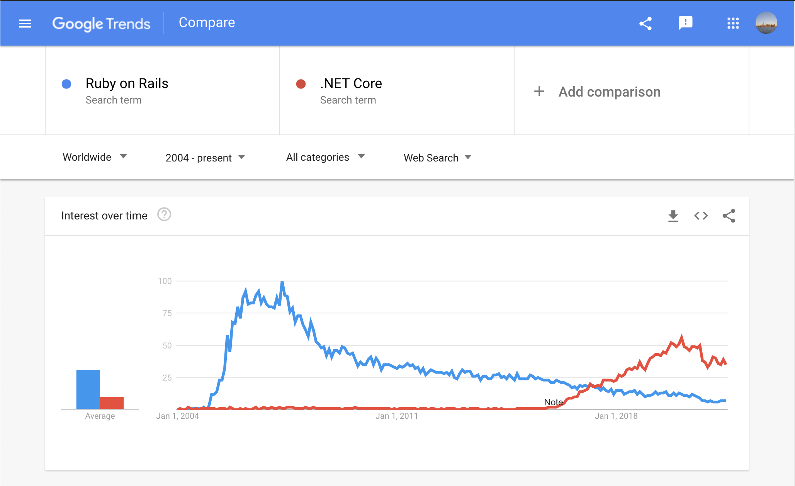
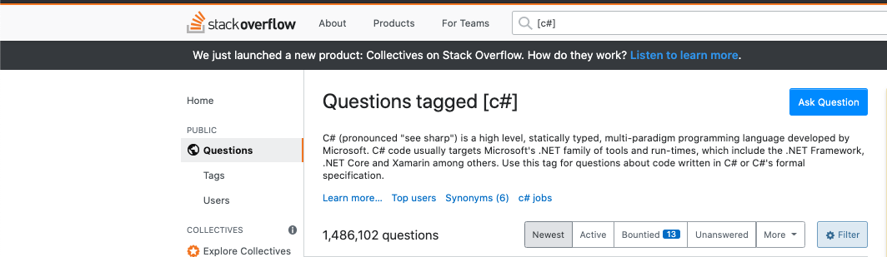

.NET Core to Ruby on Rails
I’ve recently made the switch from .NET Core to Ruby on Rails. In this blog post I want to talk about that.
Introduction
When it comes to web application development, my framework of choice was always .NET Core. This was the framework that was used to teach me the concepts and principles of web development during my time at university. The company where I had been an intern, and then later employed full time, used .NET Core in almost every application. Even in my personal time, any web app project was completed using .NET Core. This was the framework I was most comfortable using, I was a .NET Core developer through and through.
When I started in the Lab, I was introduced to Ruby on Rails (Rails). I had briefly touched Ruby when applying for jobs in university but had never fully explored the Rails framework. At the Lab, we have been using Rails as our primary framework for web application projects, and I’d like to discuss my experience with the two frameworks.
Overview
.NET Core is a free, open-source web framework developed by Microsoft for Windows, macOS and Linux. It is a lightweight framework, known for its speed and power with a huge online community. Microsoft created .NET Core for enterprise projects and is optimised to help lower the number of servers, saving on infrastructure costs. .NET Core supports multiple languages, however I only used C#. Companies that use .NET Core include Stack Overflow, GE Aviation, UPS and BBC Goodfood.
Ruby on Rails is also open-source and was created by David Heinemeier Hansson, and supports Windows, macOS and Linux. Rails is 'optimised for programmer happiness with convention over configuration’ [reference], meaning developers spend less time configuring a framework and more time being productive by using ‘sensible defaults’. Rails is built using the Ruby language. Companies that use Rails include GitHub, Shopify, Airbnb and Hulu. As a result of being open source, some companies that use Rails employ teams who are actively working on the framework.
Online Solutions
Both .NET Core and Rails are over 10 years old, with huge user bases and excellent resources. In Stack Overflow’s 2020 Developer Survey, .NET Core was rated as the 6th most popular web framework, whilst Rails was rated as the 13th most popular. The JetBrains survey reported similar results. C# developers made up 22% of respondents, whilst Ruby developers made up only 8%. Similarly, if we use Google Trends to compare the interest over time, after a huge spike in popularity Rails has been steadily declining, whilst in recent years .NET Core is growing in popularity.
This increased popularity of .NET Core is noticeable when searching for resources or support online compared to Rails. There are literally thousands of up-to-date articles and videos, by Microsoft and other developers, which as a new developer I found extremely useful. Since making the switch to Rails, it’s more difficult to find these types of resources, particularly relevant, up-to-date resources. Just take a look at these images, which highlights the difference in questions asked on Stack Overflow for C# and Ruby.

However, when I was a .NET Core developer I leaned heavily on these resources and became lazy. As developers we love to find answers to our coding problems on Google. Since working with Rails there are less articles, tutorials and solutions (particularly up to date ones) for me to reference in my code. This has led to me taking a more proactive approach to my code, and spend more time thinking about problems, referring to documentation more frequently. Coupled with the ease of Rails development, it is making me a better, happier, more confident developer.
Open Source
Both frameworks are open source with the code bases on GitHub. At the time of writing this article, .NET Core had 267 contributors and Rails had 4287. Similarly, the Rails repository has many more watchers, stars and forks. This larger GitHub community means there are far more developers ready to assist you with any problem or question. The sheer number of developers contributing to Rails has resulted in many plugins (Ruby Gems) that can be easily integrated.
Although Rails may have a larger GitHub community, .NET Core still has more coverage online, as there are far more active .NET Core developers, as illustrated in the previous section. This could also be down to the fact although .NET Core is open source, it has a dedicated team responsible for its development. Whereas Rails is completely developed by its users, and the big companies that use it.
Rails Magic
Developer time is expensive. Rails prides itself on its developer happiness and productivity and comes with many prebuilt components out of the box. Developers spend less time writing unnecessary code and more time designing the core functionality of a project. Rails also strips away a lot of the unnecessary code, doing a lot of magic in the background, taking a lot of the effort and heavy lifting away from the developer.
This combined with the Convention over Configuration doctrine means developers using Rails can get web applications up and running 30% to 50% faster than using other web frameworks [reference]. Which is fantastic for developers, if they follow the very opinionated standards and conventions of the framework.
One feature I particularly like is how Rails handles a POST request. The controller receives a hash (dictionary) containing all form variables, then you can add a completely optional method to filter those variables. In .NET Core you must explicitly assert any variable as a parameter which can become messy.
As fantastic as it is, the Rails magic can also be its downfall. Coming from .NET Core, a framework that is so granular and explicit, it took a while for me to understand that and often made debugging difficult.
C# vs Ruby
This is probably the biggest thing I’m enjoying about the switch to Rails: Ruby is fantastic. It is syntactically simple and beautiful. It is full of useful helper methods which save so much time as a developer and leads to increased productivity.
Ruby is a dynamically typed language, meaning you do not have to declare variable types or ensure method parameters are properly typed, which slims down the code base by 10-20% [reference]. This makes the code base clean, concise and self-documenting.
Most importantly it is a fun language. I also love Python, and I feel like these higher-level languages suit my brain and style of working far more.
Conclusion
In summary, Rails is fantastic, and I am thoroughly enjoying the framework. It is very simple to use, and its clean code base means we are far more productive as developers. Finding tutorials and video guides online is sometimes more difficult than with .NET Core, but the sheer number of active developers working on the Rails GitHub repository means that support is readily available.
That’s not to say that I don’t value .NET Core. It was excellent in teaching me the principles of MVC and web frameworks. Being a more granular framework than Rails meant that the learning curve was a lot steeper, however it made the switch to Rails effortless, and has made me value the Rails magic.
Rails does have its pitfalls when compared to .NET Core regarding speed and scalability. According to several tests to measure the performance of web frameworks [reference], .NET Core is fast, very fast and Rails is one of the slower frameworks. However, Rails is perfect for fast prototyping due to its focus on developer productivity. Which is exactly what we need in the Lab and why we use it.